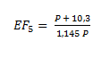

Fator de Finura para Moinho de Bolas.
O tamanho das bolas requeridas para fazer produtos mais finos que 80% passante em 200 mesh ( 74 micra ) é menor que aqueles que podem ser fabricados economicamente.
Como resultado disto, são usadas bolas maiores que o devido, com a resultante perda de eficiência A equação para a perda de eficiência, quando se usam formatos econômicos de bolas para realizar moagem fina, e dada por:

P Pem micra.
A tabela a seguir fornece o fator ES para tamanhos de produto 80% passante, desde 70 micra até 10 micra.
Para tamanhos não indicados nesta tabela, calcular EF5 pela equação acima.
| Produto 80% passante(µ) |
Fator de Finura |
Produto 80% passante(µ) |
Fator de Finura |
| 70 |
1,01 |
38 |
1,11 |
| 65 |
1,02 |
35 |
1,13 |
| 60 |
1,03 |
30 |
1,17 |
| 55 |
1,04 |
26(500 mesh) |
1,22 |
| 53(270 mesh) |
1,04 |
25 |
1,23 |
| 50 |
1,05 |
20 |
1,32 |
| 45(325 mesh) |
1,07 |
15 |
1,47 |
| 40 |
1,10 |
10 |
1,82 |